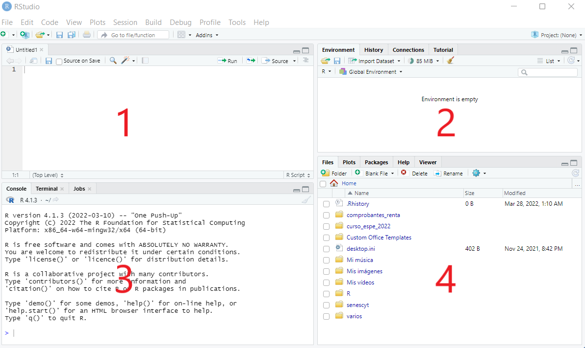
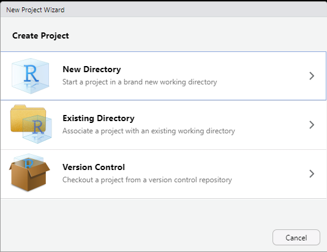
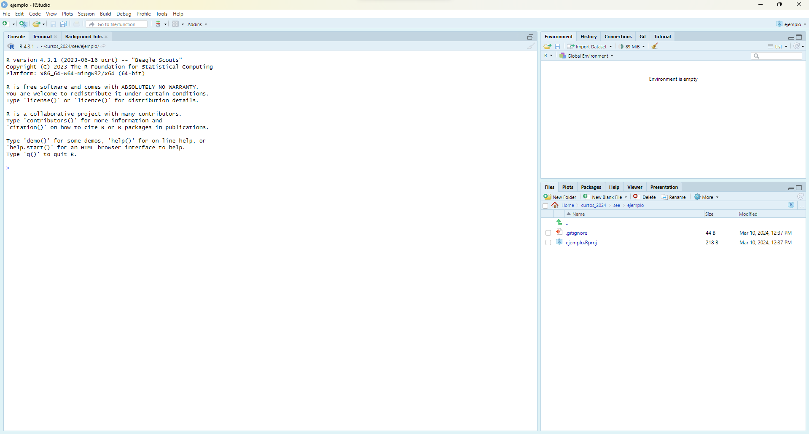
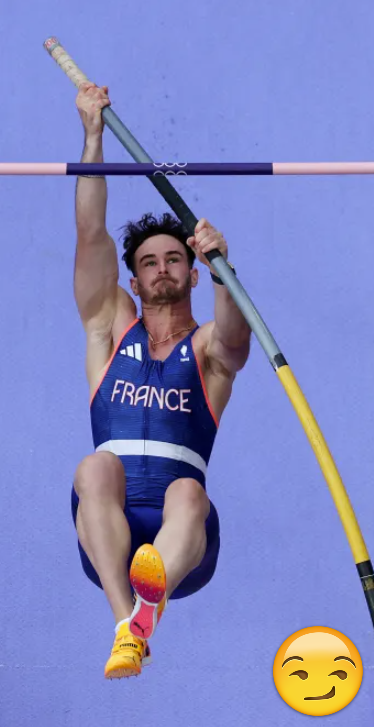

[1] 78.2
Módulo 1: Generalidades e introducción a R
Mauricio Moreno, PhD
sábado 14 de noviembre de 2026
Acerca del curso
- Cuatro sesiones, de 9H00 a 12H00: sábado 14 de noviembre de 2026, sábado 21 de noviembre de 2026, sábado 28 de noviembre de 2026 y sábado 5 de diciembre de 2026.
- Todo el material está en la página web del curso: estas diapositivas, ejercicios interactivos, autoevaluaciones y recursos.
- Los ejercicios corren en el navegador: puedes practicar aunque todavía no tengas R instalado.
- Evaluación: 40% ejercicios en clase y 60% examen virtual. Con 7/10 obtienes el certificado de aprobación.
- Preguntas fuera de clase: mmorenozambrano@gmail.com
Hoy
- R, RStudio y los proyectos de R
- Reglas de sintaxis, tipos de datos y operadores
- Objetos: vectores, factores, tablas de datos y listas
- Paquetes e importación de datos
- Operaciones estadísticas básicas
Entre cada bloque, ejercicios en la página del curso.
R y RStudio
¿Por qué R?
- Es gratuito y de código abierto.
- Tiene más de 20 000 paquetes para casi cualquier análisis.
- Es el estándar en muchas áreas de la biología, la agronomía y la salud.
- Todo queda escrito en un script: el análisis se puede repetir, revisar y compartir.
- Una comunidad enorme, también en español.
Instalación de R y RStudio
Se instalan en este orden:
- R, desde CRAN: es el lenguaje, el que hace los cálculos.
- RStudio Desktop, desde Posit: es el entorno donde escribimos y ejecutamos el código.
La guía paso a paso está en la sección Recursos de la página del curso.
RStudio

Los cuatro paneles
- Script (arriba a la izquierda): donde escribimos el código que queremos guardar.
Ctrl + Enterejecuta la línea actual. - Consola (abajo a la izquierda): donde R ejecuta el código y muestra los resultados.
- Entorno (arriba a la derecha): los objetos que hemos creado.
- Archivos, gráficos, paquetes y ayuda (abajo a la derecha).
Proyectos de R
¿Por qué un proyecto?
- Un proyecto de R es una carpeta con un archivo
.Rproj. - Al abrirlo, RStudio fija esa carpeta como carpeta de trabajo.
- Así podemos usar rutas relativas:
"datos/pinguinos.csv"en lugar de"C:/Users/Mauricio/Documentos/curso/datos/pinguinos.csv". - El mismo código funciona en tu computador, en el mío y en el de un colega.
Creando un proyecto

- File (Archivo) → New Project… (Nuevo proyecto…)
- New Directory (Nuevo directorio)
- New Project (Nuevo proyecto)
- Elegimos el nombre de la carpeta y dónde crearla.
Creando un proyecto

Una estructura sencilla
curso_R/
├── curso_R.Rproj
├── datos/
│ └── pinguinos.csv
├── scripts/
│ └── modulo_1.R
└── resultados/datos/: los datos originales. No se modifican a mano.scripts/: el código, un archivo por tarea o por sesión.resultados/: tablas y gráficos que produce el código.
Sintaxis, tipos de datos y operadores
Reglas generales
- R distingue mayúsculas y minúsculas:
Tablaytablason objetos distintos. - Asignamos con
<-(también funciona=):x <- 5. - Los nombres no pueden empezar con un número ni tener espacios: mejor
masa_finalquemasa final. - Todo lo que va después de
#es un comentario: R no lo ejecuta. - Evitemos nombres que ya usa R, como
T,F,comean.
Tipos de datos
| Tipo | Ejemplo | Para qué |
|---|---|---|
numeric |
39.1, -3 |
mediciones |
integer |
5L |
conteos |
character |
"Hi", "control" |
texto |
logical |
TRUE, FALSE |
sí o no |
factor |
factor(c("C", "L")) |
grupos o tratamientos |
Operadores
Objetos
Vectores
Un vector guarda varios valores del mismo tipo. Se crea con c().
[1] 5[1] 3800[1] 3750 3800 3650Factores
Un factor es un vector de grupos, con niveles.
[1] Adelie Gentoo Chinstrap Adelie Gentoo
Levels: Adelie Chinstrap Gentoo[1] "Adelie" "Chinstrap" "Gentoo" especie
Adelie Chinstrap Gentoo
2 1 2 Las especies, las islas y los tratamientos de un experimento son factores. En {ggplot2}, los factores definen colores y grupos.
Tablas de datos
Un data.frame es una tabla: cada columna es un vector, y todas tienen el mismo largo.
Listas
Una lista guarda objetos de cualquier tipo, incluso otras tablas.
Muchos resultados de R son listas; un gráfico de {ggplot2} también lo es.
Paquetes e importación de datos
Paquetes
- Un paquete agrega funciones a R. Se descargan de CRAN.
- Se instalan una sola vez en tu computador:
- Se cargan en cada sesión en que los uses:
Ayuda en R
Importar un archivo csv
En tu proyecto, con el archivo en la carpeta datos/:
Lo primero, siempre: revisar lo que importamos.
'data.frame': 344 obs. of 8 variables:
$ species : chr "Adelie" "Adelie" "Adelie" "Adelie" ...
$ island : chr "Torgersen" "Torgersen" "Torgersen" "Torgersen" ...
$ bill_length_mm : num 39.1 39.5 40.3 NA 36.7 39.3 38.9 39.2 34.1 42 ...
$ bill_depth_mm : num 18.7 17.4 18 NA 19.3 20.6 17.8 19.6 18.1 20.2 ...
$ flipper_length_mm: int 181 186 195 NA 193 190 181 195 193 190 ...
$ body_mass_g : int 3750 3800 3250 NA 3450 3650 3625 4675 3475 4250 ...
$ sex : chr "male" "female" "female" NA ...
$ year : int 2007 2007 2007 2007 2007 2007 2007 2007 2007 2007 ...Importar un archivo de Excel
Antes de importar
- Una fila por observación y una columna por variable.
- Nombres de columna cortos, sin espacios ni tildes.
- Sin celdas combinadas, colores ni totales al final.
Los datos del curso
pinguinos.csv: 344 pingüinos del archipiélago Palmer, Antártida (Gorman y estación Palmer LTER, paquete {palmerpenguins}, licencia CC0).
| Variable | Qué es |
|---|---|
species |
especie: Adelie, Chinstrap, Gentoo |
island |
isla: Biscoe, Dream, Torgersen |
bill_length_mm, bill_depth_mm |
largo y profundidad del pico (mm) |
flipper_length_mm |
largo de la aleta (mm) |
body_mass_g |
masa corporal (g) |
sex |
sexo: female, male |
year |
año de la medición: 2007, 2008, 2009 |

Operaciones estadísticas básicas
Valores faltantes
En los datos reales casi siempre falta algo. En R, un valor faltante es NA.
Min. 1st Qu. Median Mean 3rd Qu. Max. NAs
2700 3550 4050 4202 4750 6300 2 [1] NATendencia central y dispersión
[1] 4050[1] 801.9545 0% 25% 50% 75% 100%
2700 3550 4050 4750 6300 \[ s = \sqrt{\frac{\sum_{i=1}^{n}(x_i - \bar{x})^2}{n - 1}} \]
Resumir por grupos
Adelie Chinstrap Gentoo
3700.662 3733.088 5076.016 Variables categóricas
Adelie Chinstrap Gentoo
152 68 124
Adelie Chinstrap Gentoo
0.4418605 0.1976744 0.3604651
Biscoe Dream Torgersen
Adelie 44 56 52
Chinstrap 0 68 0
Gentoo 124 0 0¿Qué nos dice la tabla cruzada? Los Gentoo solo están en Biscoe y los Chinstrap solo en Dream. En el Módulo 2 haremos esto mismo con {dplyr} y lo veremos en un gráfico.

Antes de la próxima sesión
- Crea tu proyecto de R para el curso, con las carpetas
datos/,scripts/yresultados/. - Completa todos los ejercicios del Módulo 1: lo que no alcanzamos en clase, incluida la Parte 4, es tarea.
- Importa tus propios datos y calcula sus estadísticos básicos.
- Haz la autoevaluación del Módulo 1.
Fin del módulo 1
Créditos de fotos
Portada por Becomes Co en Unsplash
Foto final por Wolfgang Hasselmann en Unsplash
Resto de fotos: varias fuentes